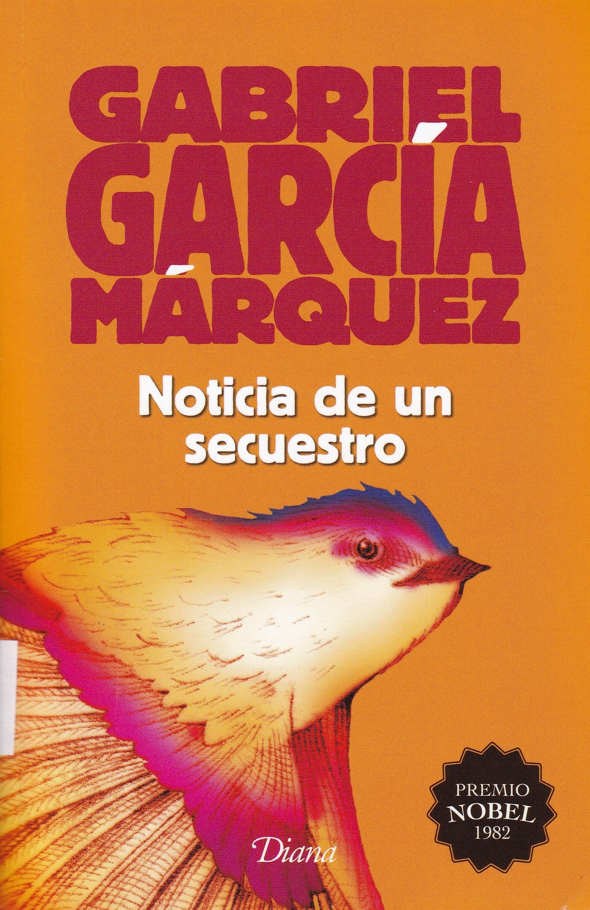

|

Noticia de un secuestroNoticia de un secuestro (1996) es un libro del colombiano Gabriel García Márquez. Está basado en la historia real del secuestro de figuras prominentes de Colombia durante la época del narcoterrorismo a inicios de los años noventa con la autoría de Los Extraditables. Ver más |
Relato de un naufrago.Relato de un náufrago es un reportaje novelado de Gabriel García Márquez que relata la historia de Luis Alejandro Velasco Sánchez, un náufrago que fue proclamado héroe de Colombia, pero tras la versión distribuida por el diario El Espectador de Bogotá, quedó olvidado; este relato obligó a que su autor se diera al exilio en París. Ver más |
|
La aventura de Miguel Littín clandestino en ChileLa aventura de Miguel Littín clandestino en Chile (1986) es un libro de Gabriel García Márquez. Relata la visita clandestina del director de cine chileno Miguel Littín en 1985 a su país natal tras 12 años en el exilio. Ver más |
|---|